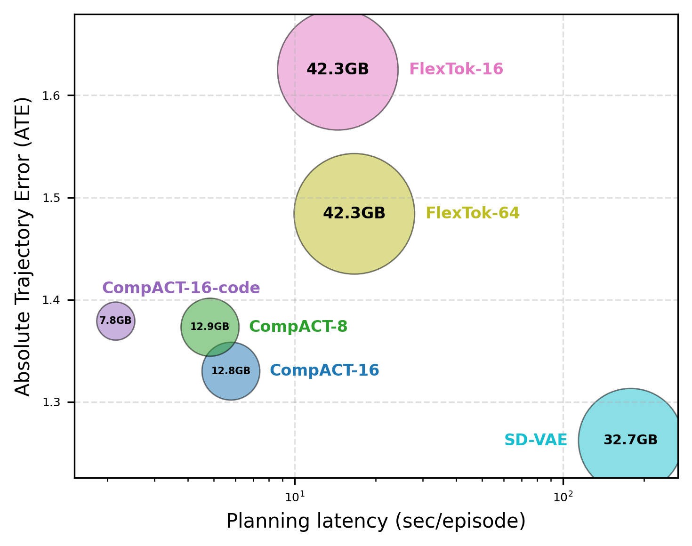
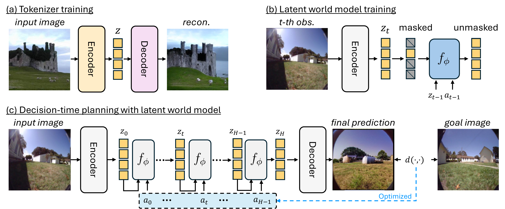
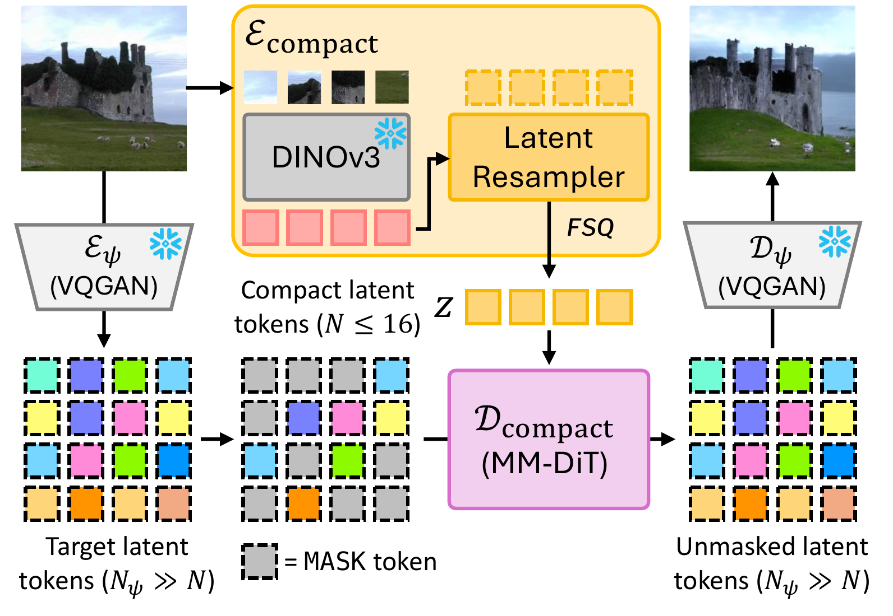
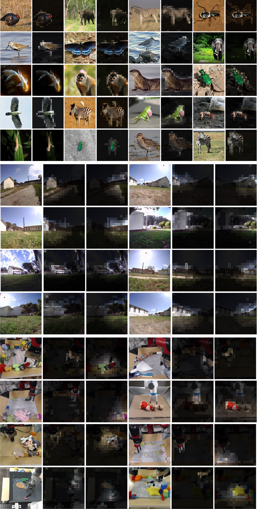
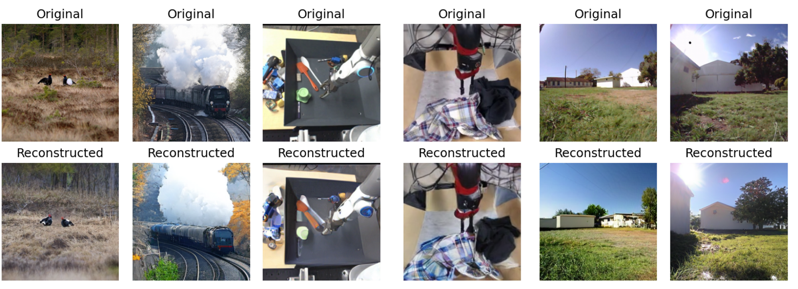
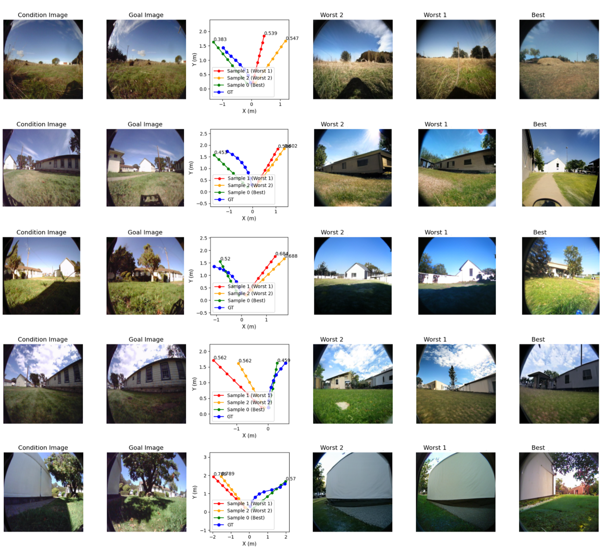
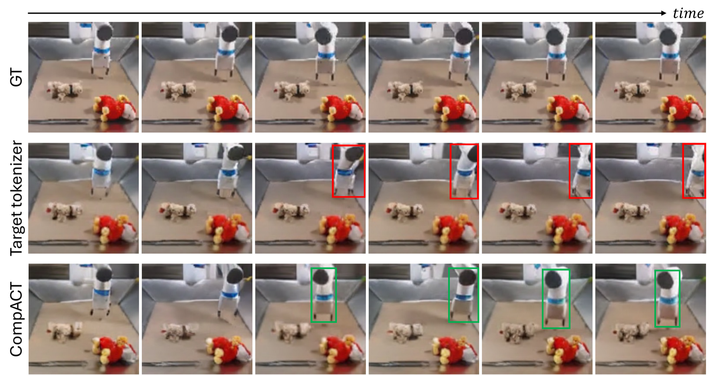

We compress each visual observation into just 8 discrete tokens and build a latent world model on top, achieving ~40x faster planning with competitive accuracy for real-time robotic control.
World models provide a powerful framework for simulating environment dynamics conditioned on actions or instructions, enabling downstream tasks such as action planning or policy learning. Recent approaches leverage world models as learned simulators, but their application to decision-time planning remains computationally prohibitive for real-time control. A key bottleneck lies in latent representations: conventional tokenizers encode each observation into hundreds of tokens, making planning both slow and resource-intensive. To address this, we propose CompACT, a discrete tokenizer that compresses each observation into as few as 8 tokens, drastically reducing computational cost while preserving essential information for planning. An action-conditioned world model that occupies the CompACT tokenizer achieves competitive planning performance with orders-of-magnitude faster planning, offering a practical step toward real-world deployment of world models.
World models are powerful for planning, but current visual tokenizers encode each image into hundreds of tokens (e.g., 256–1024), making decision-time planning computationally prohibitive for real-time control. CompACT addresses this by compressing each observation into just 8–16 discrete tokens, unlocking orders-of-magnitude faster planning while preserving the essential information needed for accurate action selection.

Planning efficiency. ATE (absolute trajectory error), planning latency, and GPU peak memory on RECON. CompACT achieves competitive accuracy with dramatically lower latency and memory usage.
CompACT introduces two key ideas: (1) Semantic encoding via a frozen DINOv3 backbone paired with a latent resampler that distills visual features into a compact set of discrete tokens, preserving planning-critical semantics while discarding low-level reconstruction details. (2) Generative decoding through an MM-DiT-based decoder that unmasks target VQGAN tokens conditioned on the compact latent tokens, enabling faithful pixel-level reconstruction when needed.

Overview of the proposed latent world model formulation. (a) An image tokenizer is trained to map an input image into compact latent tokens. (b) A latent world model is trained to model the conditional distribution of the future state. (c) The world model is applied to decision-time planning via sampling-based optimization (e.g., CEM).

Tokenizer architecture detail. During training, only the latent resampler and Dcompact are updated. The frozen DINOv3 encoder provides semantic features, while a pre-trained VQGAN encoder produces masked target tokens for the generative decoder.
CompACT tokens naturally attend to coherent, semantically meaningful scene elements—such as objects, structures, and manipulation targets—without any explicit supervision for spatial decomposition. This emergent modularity makes the compact representation interpretable and well-suited for structured planning.

Attention visualization for compact latent tokens in the latent resampler. Each token attends to a semantically coherent region. Brighter color indicates higher attention score.

Qualitative results of reconstruction with CompACT. Despite using only 8 tokens, CompACT reconstructions preserve the essential visual structure needed for planning.
On RECON navigation: CompACT achieves ~40× planning speedup with comparable accuracy to 784-token baselines, enabling real-time planning on a single GPU. On RoboNet manipulation: CompACT achieves ~3× lower action prediction error and 5.2× faster generation. The world model scales to 750M parameters while remaining fast enough for practical deployment.

Navigation planning results. Among sampled action candidates, the worst two and best action sequences are shown. CompACT enables effective planning by accurately simulating future states.

Action-conditioned video generation. Red and green boxes indicate incorrect and correct end-effector positions, respectively. CompACT generates more physically plausible action-conditioned futures.